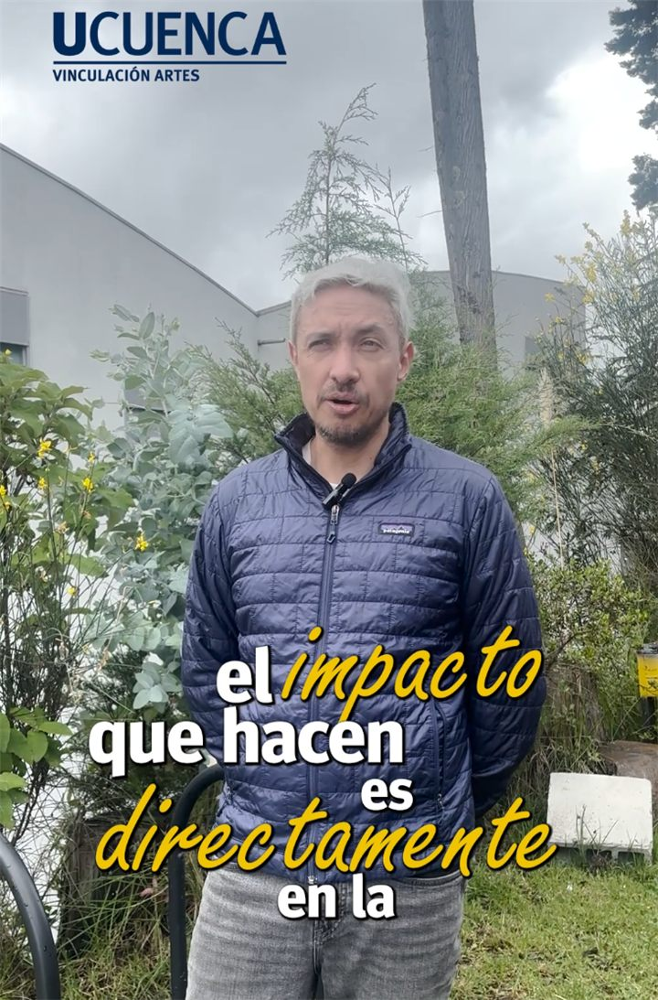
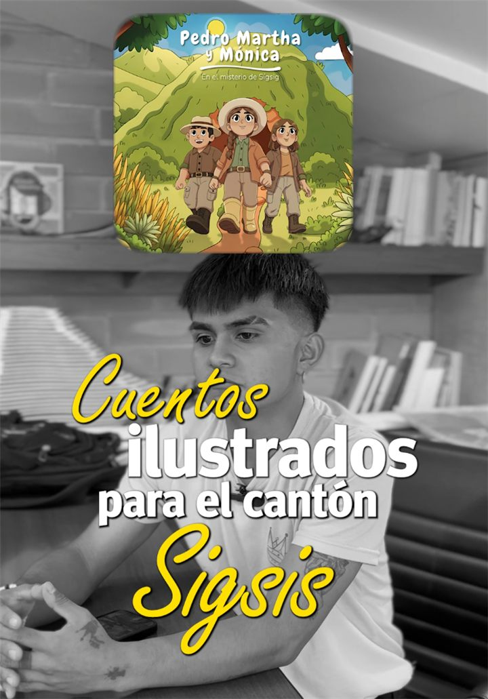
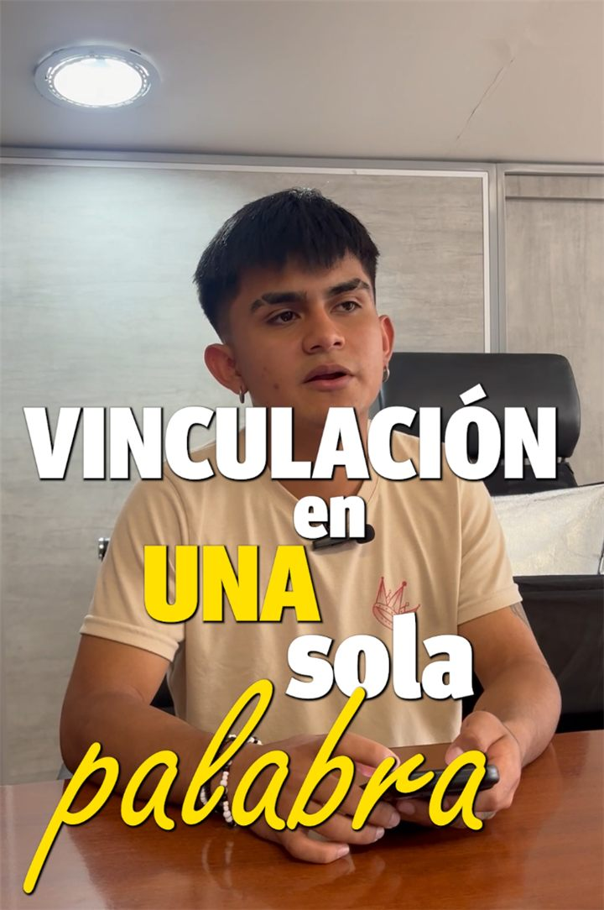
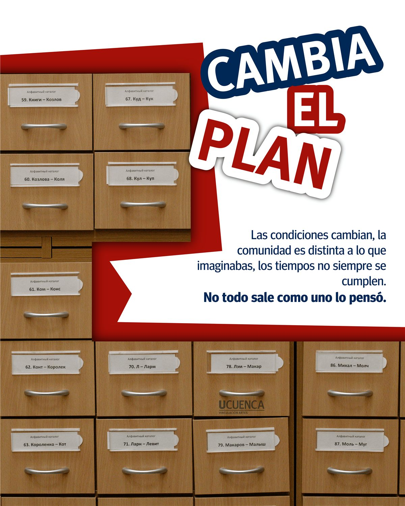
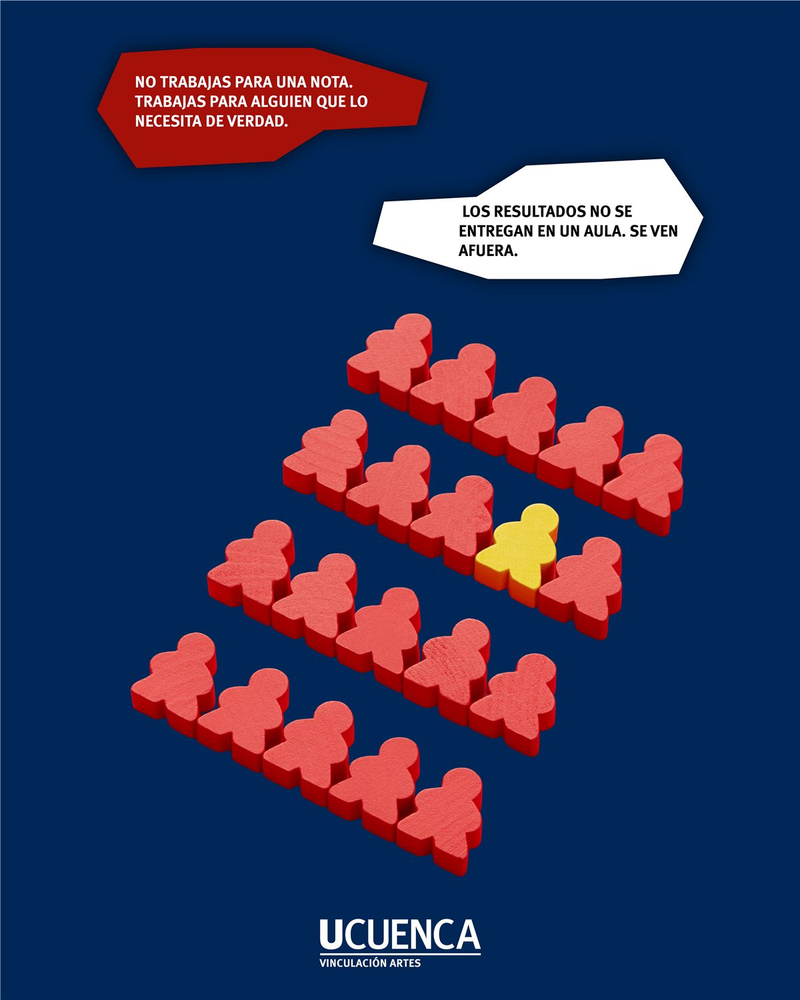
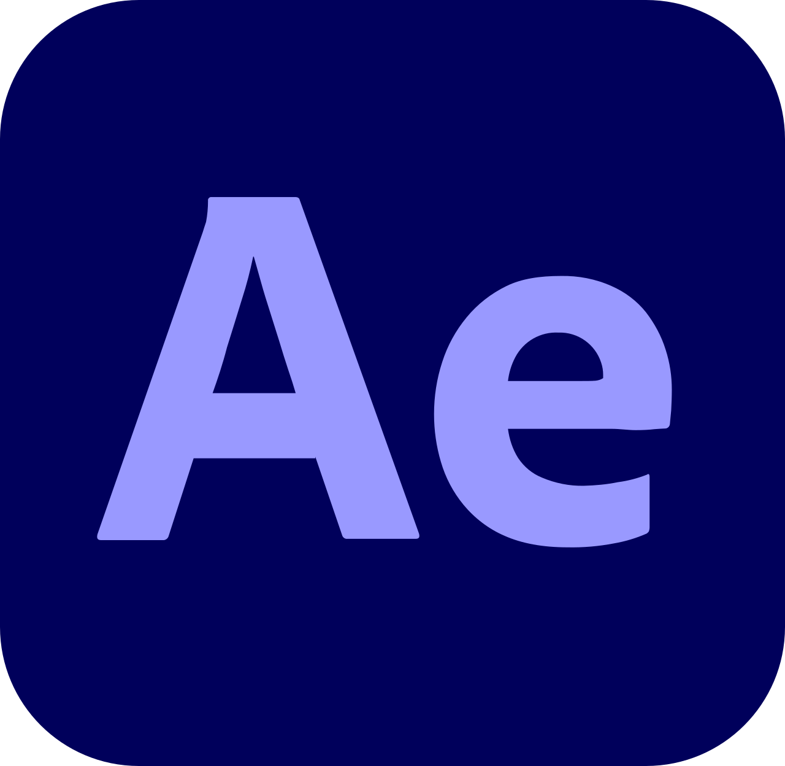
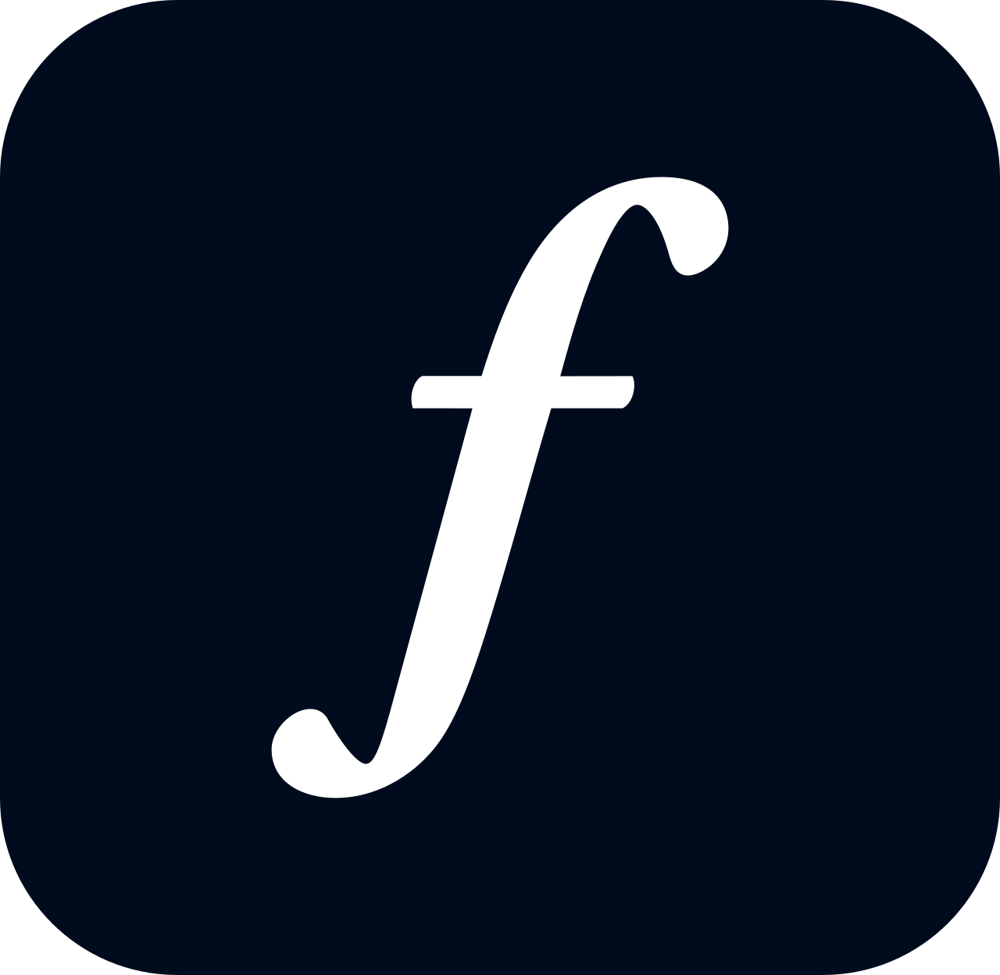
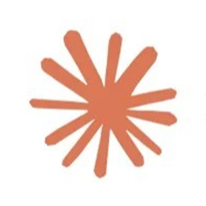

Instagram · Facebook
Postrencia
Creé la identidad de la marca y diseño sus piezas para Instagram y Facebook, con un estilo visual reconocible en cada publicación.
Diseño gráfico · Contenido para redes sociales
Diseño contenido para redes sociales: reels, carruseles e identidades de marca que se entienden rápido y funcionan en el feed. Me apoyo en herramientas de IA para trabajar más rápido y probar más ideas.
01
Marcas en las que diseño el contenido, desde la identidad visual hasta las piezas que se publican.
Instagram · Facebook
Creé la identidad de la marca y diseño sus piezas para Instagram y Facebook, con un estilo visual reconocible en cada publicación.

Estudio de arquitectura e ingeniería. Diseñé su identidad visual y el contenido para Instagram, con una línea sobria y limpia acorde al rubro.

Contenido para la promoción de propiedades en Facebook: videos y piezas que muestran cada inmueble de forma clara y atractiva.
02 · Instagram
Contenido para la cuenta de Vinculación con la Sociedad de la Facultad de Artes de la Universidad de Cuenca. Le di una línea visual propia, que la distingue de las cuentas institucionales habituales: reels con docentes y estudiantes, tipografía expresiva y carruseles con un estilo gráfico marcado.
70 seguidores al empezar. Desde entonces, la comunidad no ha dejado de crecer.
Esta es una selección, no todo lo publicado: la idea es mostrar el estilo y el enfoque de la cuenta.





03
Logotipos y sistemas visuales pensados para funcionar, primero, en redes sociales.

Logotipo con un monograma lúdico y un rojo intenso que la hace fácil de reconocer.

Isotipo geométrico inspirado en volúmenes arquitectónicos, con una paleta sobria de azules.

Logotipo para una marca de electrodomésticos: la H forma una casa y conecta el nombre con el hogar.
04
Diseño y desarrollo sitios web con asistencia de IA, desde el sistema de diseño hasta la publicación.

Sitio web · Proyecto de tesis
Proyecto de tesis de Diseño Gráfico en la Universidad de Cuenca: un sitio web que acerca el patrimonio de las cinco parroquias del cantón Biblián a jóvenes de 16 a 23 años.
05

After Effects
Adobe Fonts
Claude Code06
¿Tienes una marca o una cuenta que necesita contenido? Escríbeme o llámame.